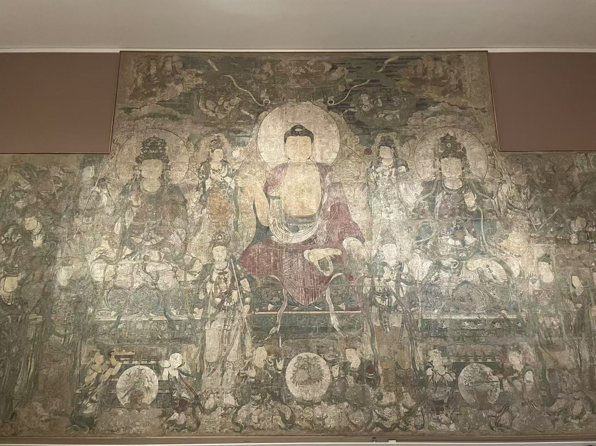

GUANGSHENG TEMPLE / YUAN MURALS
广胜寺壁画
在纽约与堪萨斯城，把同一座殿堂的三段画面重新联系起来。

从三面墙看起
东西两壁的法会，与南壁的一次参访。
寺院与流转
先回到广胜下寺
这三件都来自山西洪洞的广胜下寺大雄宝殿。药师佛与炽盛光佛原在东西两壁相对，善财童子的故事则在南壁展开。今天分处纽约和堪萨斯城的照片，由此有了一条共同的线索。
地震之后，画什么样的佛
1303年的地震重创广胜寺。此后的修建背景，使这两幅大壁画不只是风格上的近邻：药师佛关乎疗病与护佑，炽盛光佛则关乎星曜与禳灾。两馆都把这种组合与灾后的祈愿联系起来，但具体委托人和作画动机并未因此得到确认。
从墙面到博物馆
20世纪上半叶，这些壁画被售出、分割并运往海外。纳尔逊的来源档案据1929年碑记，将出售壁画筹资修殿的事件记为1927年；大都会现行网页概述则写作20世纪30年代，年代口径尚有差异。炽盛光佛1932年由纳尔逊购入，善财残片1947年正式入藏，药师佛1965年受赠进入大都会。